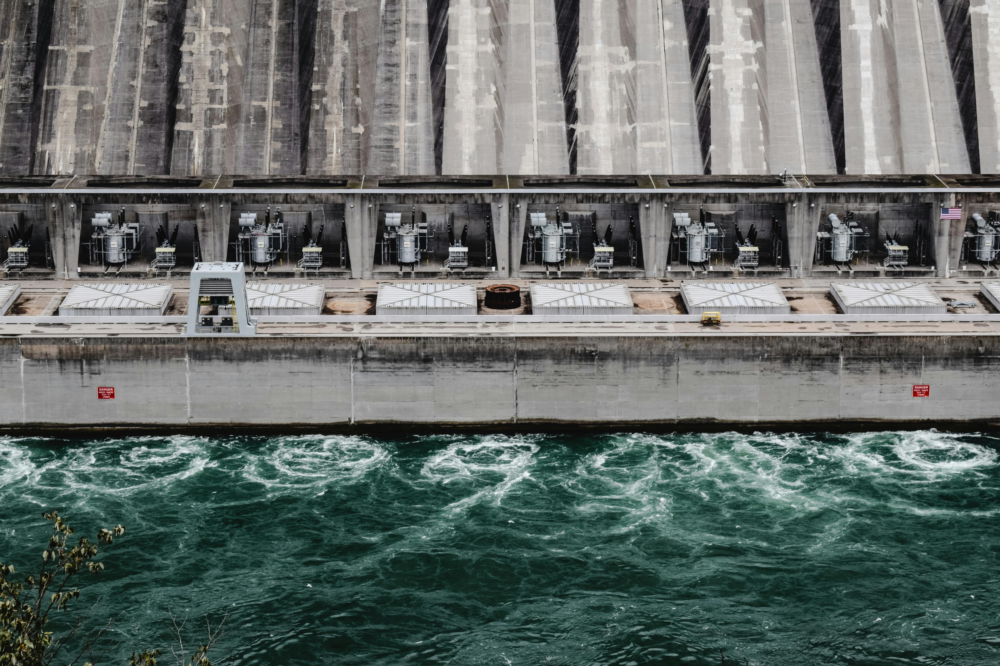
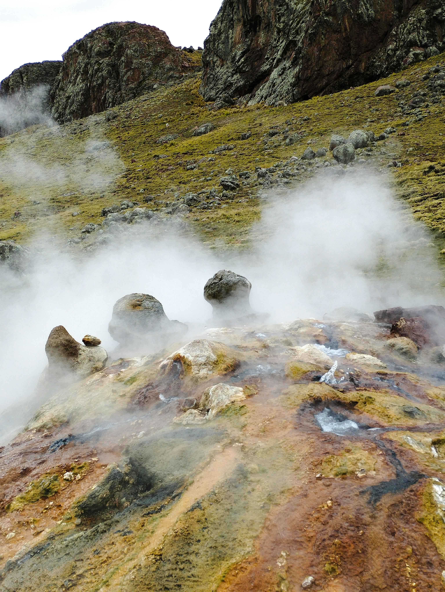

Energia Limpa e Renovável: O Futuro da Energia
Tipos de energias limpas
Energia solar
O que é energia solar?
Energia solar é a energia renovável e limpa gerada a partir da luz e do calor do sol, convertida em eletricidade (fotovoltaica) ou calor (térmica). É uma fonte inesgotável, captada por painéis que transformam radiação solar em energia útil para casas e empresas, reduzindo custos na conta de luz e emissões poluentes.

Energia Eólica
O que é energia Eólica?
A energia eólica é a transformação da força dos ventos (energia cinética) em energia elétrica, utilizando aerogeradores ou turbinas eólicas. É uma fonte de energia limpa, renovável e inesgotável, fundamental para a redução de gases de efeito estufa e a transição energética.

Hidrelétrica
O que é Hidrelétrica?
Uma usina hidrelétrica é uma instalação que transforma a energia potencial e cinética da água de rios em energia elétrica. Ela utiliza a força da água represada para girar turbinas, que acionam geradores para produzir eletricidade renovável. É uma fonte limpa, mas com grande impacto ambiental pela construção de reservatórios.

Biomassa
O que é Biomassa?
Biomassa é toda matéria orgânica de origem vegetal ou animal utilizada como fonte de energia renovável. Ela transforma resíduos como bagaço de cana, madeira, cascas agrícolas e lixo orgânico em calor, eletricidade ou combustíveis (etanol, biodiesel, biogás). É uma alternativa sustentável que substitui combustíveis fósseis.
Hidrogênio-verde
O que é Hidrogênio verde?
O hidrogênio verde ( ) é um combustível limpo produzido pela eletrólise da água ( ), utilizando eletricidade de fontes renováveis (solar, eólica ou hídrica). Esse processo separa hidrogênio e oxigênio sem emitir dióxido de carbono ( ), sendo fundamental para a descarbonização de indústrias pesadas e transporte.
Geotérmica
O que é Geotérmica?
Energia geotérmica é o calor natural vindo do interior da Terra, armazenado em rochas e fluidos sob a crosta terrestre. É uma fonte de energia renovável e limpa, utilizada para gerar eletricidade em usinas, aquecer edifícios ou em processos industriais. O calor é captado via poços que trazem água quente/vapor à superfície.
